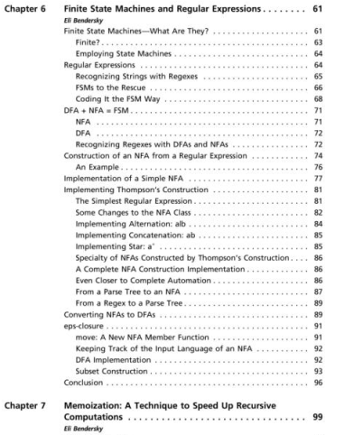
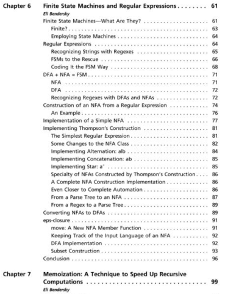

Here's a shot from the book's table of contents, showing two of my chapters:
Unfortunately, the code accompanying chapter 6 has not been published with the book, so I've collected it together and placed it online here.
Here's a shot from the book's table of contents, showing two of my chapters:
Unfortunately, the code accompanying chapter 6 has not been published with the book, so I've collected it together and placed it online here.
For comments, please send me an email.